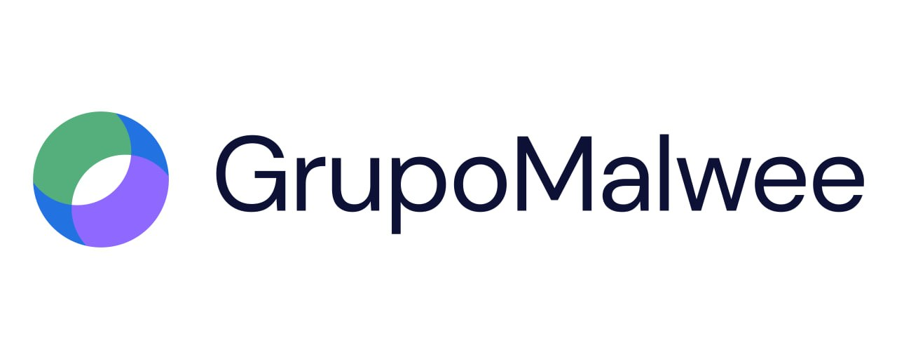

Vá aonde as coisas acontecem
Por que ir ao local onde o trabalho acontece vale mais do que achismos, e o que muda quando você observa antes de opinar.
Treinamento
aberto
Uma introdução ao pensamento Lean
Quer aprender a resolver problemas como um engenheiro da Toyota? Participe do treinamento e aprenda mais sobre a habilidade mais procurada do mercado: resolução de problemas.
Aberto a todos · Sem pré-requisito
Sobre o evento
Muitas vezes, o que falta não é esforço nem ferramenta, mas método.
No coração da Filosofia Lean está o pensamento científico: observar a realidade, levantar hipóteses, testar, aprender com os resultados e recomeçar. É esse jeito de pensar que transforma problemas em oportunidades de melhoria contínua.
O GLean te convida para o seu Treinamento Aberto de 2026.2, pensado para quem nunca teve contato com o Lean ou quer entender o que está por trás das ferramentas.
O que vamos explorar
O ciclo que está por trás de toda melhoria contínua e o Kata de Melhoria, a rotina que transforma esse ciclo em hábito.
Por que ir ao local onde o trabalho acontece vale mais do que achismos, e o que muda quando você observa antes de opinar.
Como questionar o problema até chegar à causa raiz, em vez de tratar só o sintoma e vê-lo voltar.
Como o ciclo PDCA ajuda a tratar cada ideia como uma hipótese a ser testada, medida e aprendida.
A rotina do Toyota Kata para praticar o pensamento científico até ele virar hábito, em quatro passos:
Para quem é
Para quem gosta de resolver problemas e não se contenta com o "sempre foi assim". Não é preciso nenhum conhecimento prévio: se você se reconhece em alguma dessas linhas, esse treinamento é para você.
Começamos do zero, com exemplos do dia a dia. É o ponto de partida ideal.
Já viu 5S, kanban ou A3 e quer entender a lógica que faz tudo isso funcionar.
Engenharias, administração, saúde, computação... o pensamento Lean serve para todo mundo.
Se o "sempre foi assim" te incomoda, você vai se sentir em casa.
Sobre o GLean
Vinculado ao departamento de Engenharia de Produção, o GLean estuda e aplica melhoria contínua em problemas reais, formando pessoas que levam essa cultura para onde forem.
O Treinamento Aberto é a forma que encontramos de dividir com toda a universidade um pouco do que aprendemos em duas décadas de prática.
Empresas parceiras

Inscreva-se
Traga suas perguntas, suas curiosidades e a vontade de questionar o óbvio. Esperamos você!
Para mais informações, fique de olho no nosso Instagram: @glean.ufsc